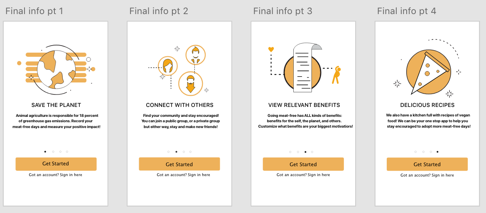
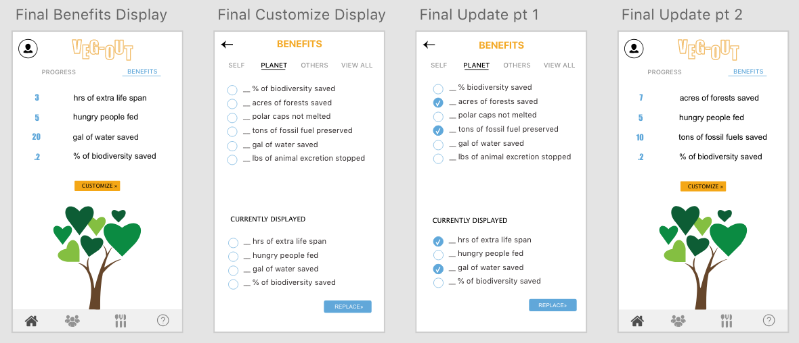
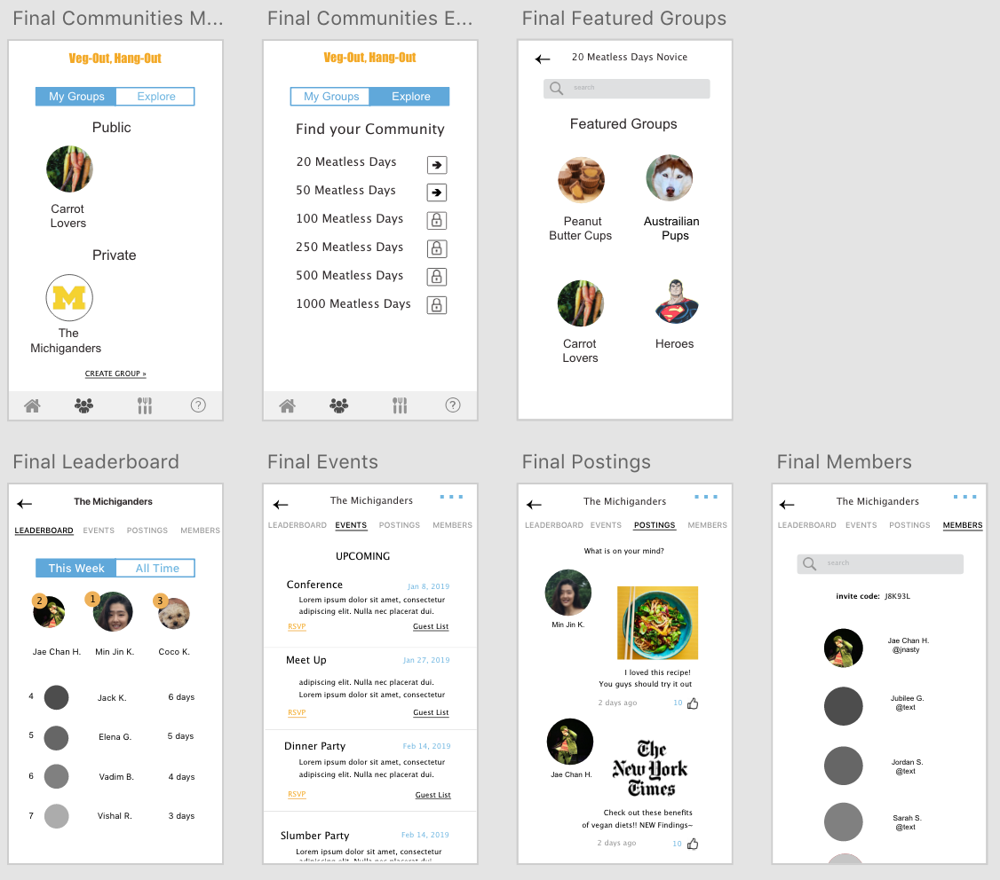
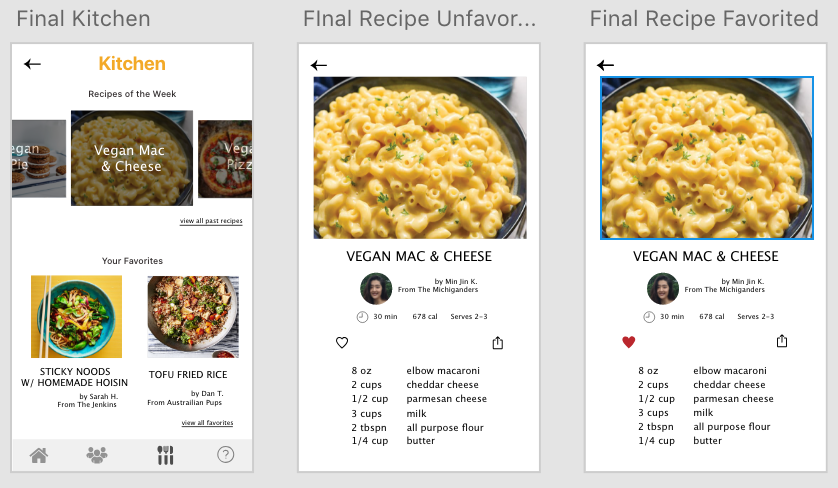
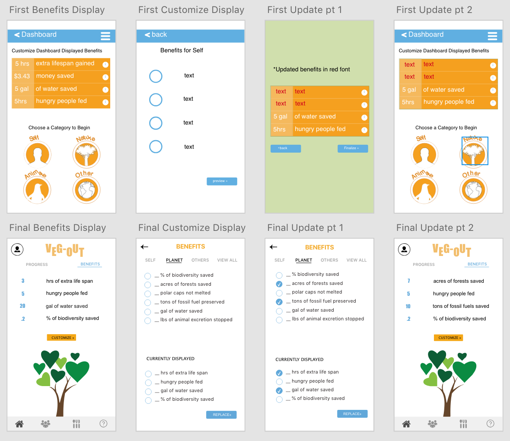
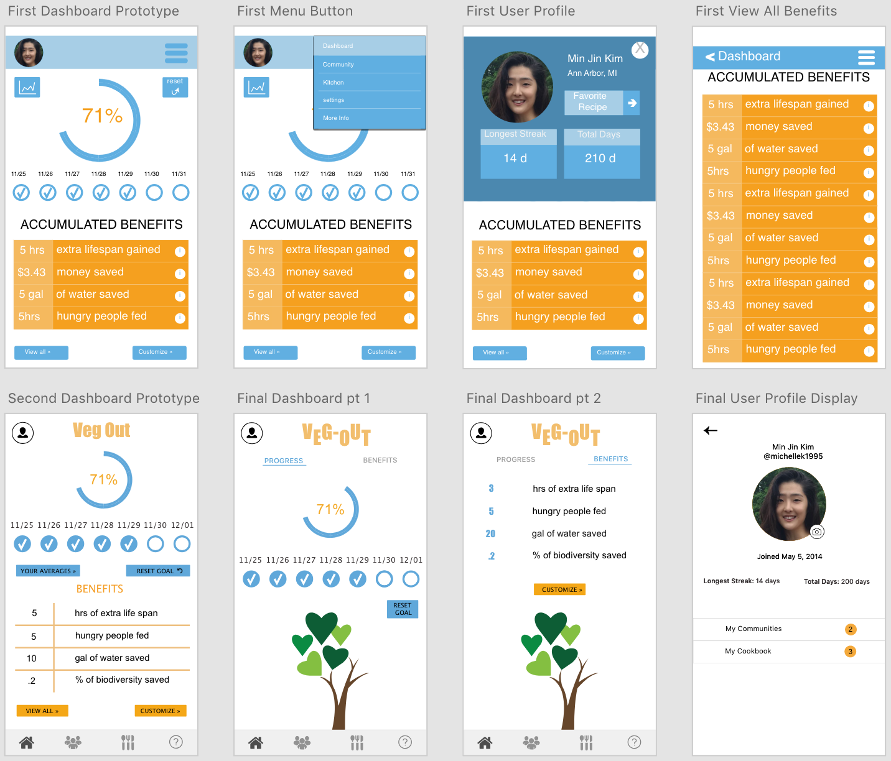
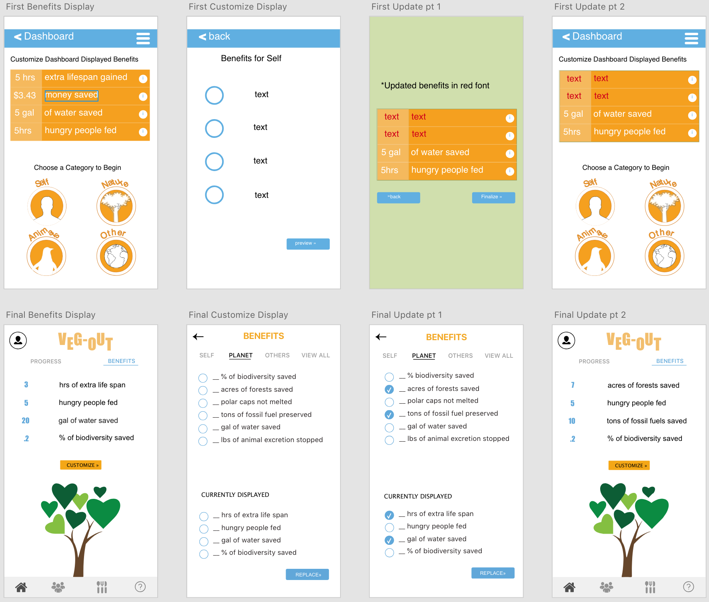
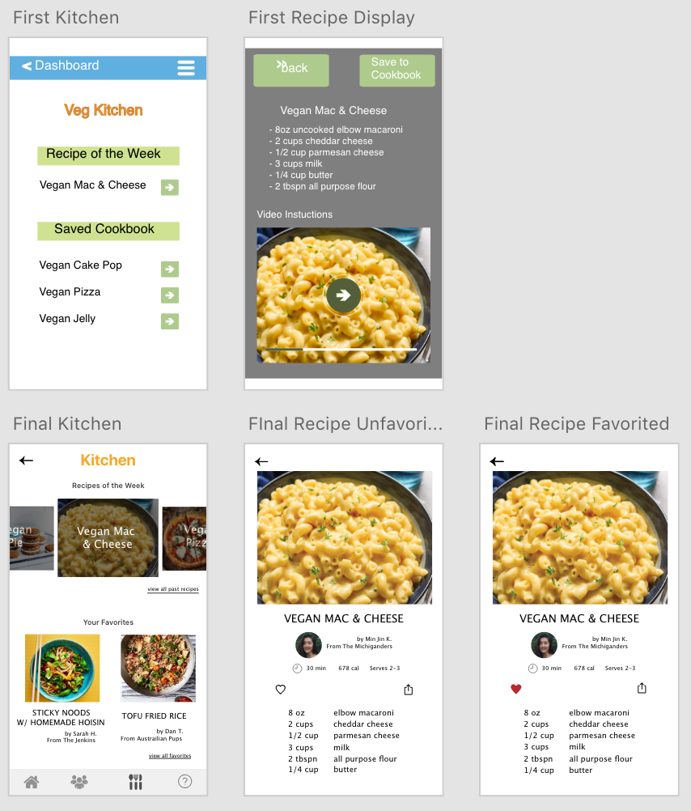
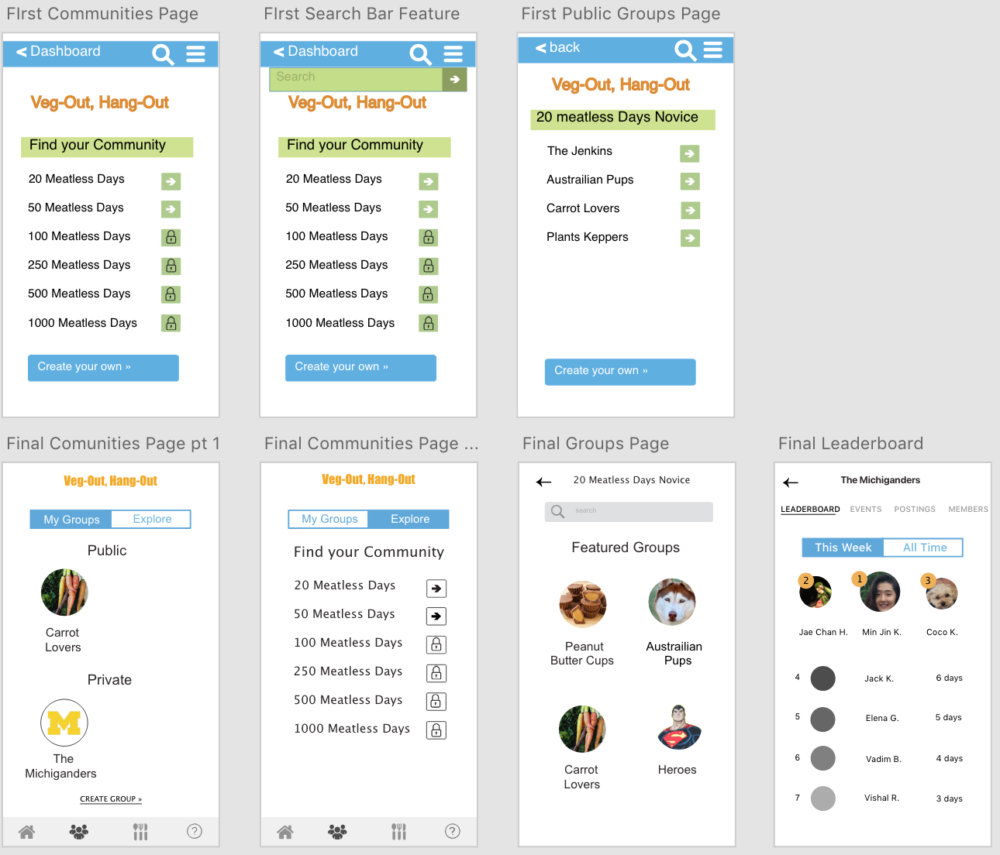

UX Designer, Allergic to Chai Tea
The animal agriculture industry produces roughly 18% percent of greenhouse gas emissions, which is more than the combined exhaust from all transportation (Food and Agriculture Organization of the United Nations, 2006). Not only does animal agriculture industries’ gas emissions output raise temperatures and lower air quality and in return, erase our planet’s biodiversity, the industries also utilize an unsustainable amount of resources; 80-90% of US water consumption is utilized by the animal agriculture industries (USDA: Economic Research Service, 2016).
Although meat-free diets have numerous positive environmental impacts, environmental agencies rarely discuss them. I believe that to significantly improve the state of our planet, people need to be aware of how wasteful the animal industries are. I wanted to design a mobile app which would help users reduce their meat-intake by persuading the users with details of the positive benefits that can be gained from meat-free days, providing users with social support, and equipping them with vegan recipes.
Veg-Out needed to include features that will encourage users to have more “meat-free” days and give them the means to accomplish such a complex goal but in a simple way where users will not feel overwhelmed. I decided on four key features I wanted my app to include: a preset weekly goal, a display of benefits from number of meat-free days, ability to find communities for social support, and a section that has vegan recipes to help Veg-Out become a one-stop-app for all needs when attempting to reduce meat-intake. 
If on 11/25 the user had a meat-free day and checks the circle under 11/25, the progress meter will display 14% and the tree at the bottom of the screen will grow one heart leaf . At the end of the week, if the user went meat-free all seven days then the user will have achieved 100% of the preset weekly goal and will have the complete tree to match her progress. However, if the user already began the preset weekly goal but failed to not eat meat for example, on the third day of the week, the user will need to click “reset goal” and the dashboard will switch back to the 0% progress with a new preset weekly goal starting from the next day.
The dashboard will only display four benefits to be gained from going meat-free at one time. Therefore, if the user wants to see a specific set of benefits more relevant to her, she can swipe left to the benefits section of the dashboard and have options to customize her dashboard from three separate categories of benefits: benefits for the self, benefits for others, & benefits for the planet. 
There are public groups users can join to meet new people and private groups users can create with their real life friends. In the “explore” public communities screen, there are groups that are only open to users with a specific minimum number of meatless days. For example, in the above pictures, the user can only access the list of groups for 20 meatless days and 50 meatless days because the user has not reached 100 meatless days. Once the user clicks on a group, the user will have access to a leaderboard, events screens, postings screen where people can share vegan related posts, and a member listing screen. The leaderboard has all time and this week rankings for who have acquired the most meat-free days. 
The kitchen feature will include recipes of the week and a cookbook of your favorite recipes so that if you need ideas for vegan meals, you can turn to the app instead of having to search through the web. 
Thank you for stopping by!
Design Process     